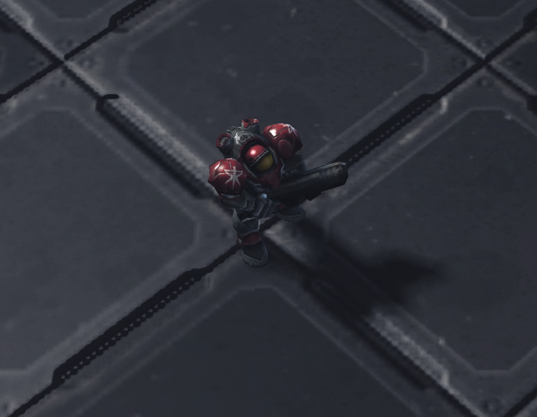
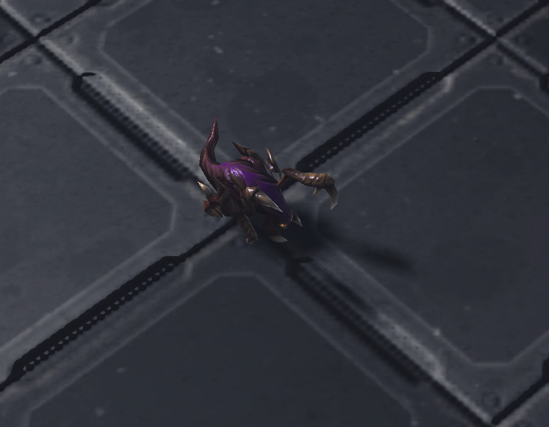

Discover the epic battles between Terran, Protoss and Zerg. Choose your race, master the units, and conquer the galaxy!
Terran
Resilient humans relying on powerful machines and tactical flexibility.
Protoss

Advanced technology and powerful psionic abilities.
Zerg
Relentless, evolving creatures overwhelming enemies with sheer numbers.